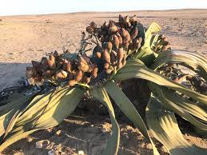

Welwitschiaceae
Welwitschia Family
Welwitschiaceae is a unique, monotypic family of gymnosperms containing only one species, Welwitschia mirabilis. This extraordinary plant is endemic to the Namib Desert of Namibia and Angola. It is characterized by a low, woody stem, a long taproot, and only two enormous, strap-like leaves that grow continuously throughout its extremely long lifespan (often over 1,000 years). It produces separate male and female cone-like structures (strobili) on branched stalks.
Overview
The Welwitschiaceae family consists of a single, bizarre species, Welwitschia mirabilis, often described as a "living fossil." It is restricted to the coastal fog belt of the Namib Desert, one of the driest environments on Earth. Its unique morphology is an adaptation to these extreme conditions. The plant has a short, thick, woody stem that barely rises above the ground, connected to a very long taproot to reach deep water sources. Its most striking feature is the pair of enormous leaves that grow continuously from a basal meristem, splitting and fraying over time, potentially reaching several meters in length.
Welwitschia is dioecious, meaning individual plants are either male or female, producing distinct reproductive cones (strobili). Pollination is thought to involve insects attracted to nectar produced by both male and female cones, as well as wind. The plant relies heavily on coastal fog as a water source, absorbed through microscopic pores (stomata) on the leaf surfaces.
Due to its unique biology, extreme longevity (some individuals estimated to be 1,500-2,000 years old), restricted distribution, and evolutionary significance, Welwitschia mirabilis is a protected species and an icon of the Namib Desert. It holds significant scientific interest for studies in plant adaptation, longevity, and gymnosperm evolution.
Quick Facts
- Scientific Name: Welwitschiaceae
- Common Name: Welwitschia family
- Number of Genera: 1 (Welwitschia)
- Number of Species: 1 (Welwitschia mirabilis)
- Distribution: Namib Desert (coastal Namibia and Angola)
- Evolutionary Group: Gymnosperms - Gnetophytes - Order Gnetales
Key Characteristics
Growth Form and Habit
A unique perennial gymnosperm with an extremely long lifespan. Possesses a short, thick, woody, concave stem (caudex), largely subterranean or flush with the ground surface, usually unbranched. A very long, robust taproot anchors the plant and accesses deep water.
Leaves
Produces only two true foliage leaves throughout its entire life. These leaves are opposite, strap-shaped, leathery, and arise from a groove in the upper rim of the stem (basal meristem). They exhibit continuous growth from the base while dying back and fraying from the tips, often splitting into multiple ribbon-like sections. Venation is parallel. The initial two seed leaves (cotyledons) wither relatively early.
Reproductive Structures (Strobili/Cones)
Plants are dioecious (separate male and female individuals). Reproductive structures are cone-like strobili, borne on dichotomously branched stalks that arise from meristematic tissue in the axils above the leaf bases.
- Male Strobili (Microsporangiate): Relatively small (few cm long), cone-like, reddish or salmon-colored, clustered on branched stalks. Each cone consists of overlapping scales (bracts). Each scale subtends a structure often termed a "male flower," which includes six stamens (microsporangiophores) fused at their bases into a tube surrounding a central, sterile ovule. Pollen is produced in microsporangia on the anther-like tips.
- Female Strobili (Megasporangiate): Larger than male cones, initially reddish-brown, becoming more purplish or brown when mature, also clustered on branched stalks. Each cone consists of overlapping scales (bracts). Each scale subtends a single ovule, which is enclosed by two fused bracteoles often referred to as a "perianth" or integument. A long micropylar tube extends from the apex of the ovule for pollen capture.
Pollination and Seeds
Pollination likely involves both wind and insects (possibly true bugs or flies) attracted to nectar ("pollination drops") produced by both male and female strobili. Fertilization occurs after pollen grains grow pollen tubes to reach the female gamete within the ovule. A process resembling double fertilization (common in angiosperms) occurs, but typically only one fertilization product develops into the embryo.
The seed is enclosed within the persistent, enlarged, and papery winged "perianth" (fused bracteoles), forming a dispersal unit adapted for wind (anemochory). Seeds contain nutritive tissue derived from the female gametophyte (primary endosperm, typical of gymnosperms).
Chemical Characteristics
Contains various compounds likely related to drought tolerance and defense against herbivores in its harsh environment. Unlike conifers, Welwitschiaceae lacks resin canals.
Field Identification
Identifying Welwitschiaceae (Welwitschia mirabilis) is unmistakable due to its unique morphology and restricted habitat.
Primary Identification Features
- Unique Habit: Low, woody stem mostly flush with ground.
- Leaves: Only two enormous, strap-like leaves, growing continuously from the base, sprawling on the ground, often frayed and split.
- Reproductive Structures: Cone-like strobili borne on branched stalks arising from the stem apex near the leaf bases.
- Habitat/Range: Exclusively found in the Namib Desert fog belt (Namibia and Angola).
Secondary Identification Features
- Dioecious: Male and female plants have differently structured cones (male smaller, reddish; female larger, brownish/purplish).
- Stem Texture: Rough, woody, often cracked or fissured surface.
Seasonal Identification Tips
- Year-round: The two-leaf structure is constant and identifiable anytime.
- Reproductive Season: Cones are produced seasonally, making sex determination possible. Timing may depend on rainfall or other environmental cues.
Common Confusion Points
None. Welwitschia mirabilis is morphologically unique and cannot be confused with any other living plant once seen.
Field Guide Quick Reference
Look For:
- Low, woody stem
- Only two strap-like, frayed leaves
- Cone-like structures on stalks
- Namib Desert habitat
Key Variations:
- Plant size (related to age)
- Degree of leaf splitting/fraying
- Presence/type of cones (male vs. female)
Notable Examples
The family contains only one species.

Welwitschia mirabilis
Welwitschia
The sole member of the family and order. A bizarre, extremely long-lived desert gymnosperm endemic to the Namib Desert. Characterized by its low stem, two perpetually growing strap-like leaves that become tattered over centuries, and separate male and female cone-like strobili. A remarkable example of adaptation to extreme aridity.
Phylogeny and Classification
Welwitschiaceae belongs to the Gnetales, an order of gymnosperms that also includes Gnetaceae (Gnetum) and Ephedraceae (Ephedra). The Gnetales (or gnetophytes) represent one of the four major lineages of living gymnosperms, alongside conifers, cycads, and Ginkgo.
The phylogenetic position of the Gnetales has been highly debated. Morphological similarities with angiosperms (like vessel elements in wood and double fertilization-like processes) once led to the hypothesis (the "anthophyte hypothesis") that Gnetales were the closest living relatives of flowering plants. However, most modern molecular phylogenetic studies contradict this, instead suggesting that Gnetales are more closely related to conifers, possibly even nested within them (often near Pinaceae). The exact relationship among the three gnetophyte families (Welwitschiaceae, Gnetaceae, Ephedraceae) is also debated, but they consistently form a monophyletic group (Gnetales).
Position in Plant Phylogeny
- Kingdom: Plantae
- Clade: Tracheophytes (Vascular plants)
- Clade: Spermatophytes (Seed plants)
- Clade: Gymnosperms
- Clade: Gnetophytes
- Order: Gnetales
- Family: Welwitschiaceae
Evolutionary Significance
Welwitschia mirabilis and its family are evolutionarily significant for numerous reasons:
- Unique Morphology: Represents an extreme example of evolutionary divergence and adaptation, with a body plan unlike any other plant.
- Living Fossil: Considered a relic from an ancient lineage, providing insights into gymnosperm evolution.
- Adaptation to Aridity: A model organism for studying plant survival strategies in extreme desert environments (fog absorption, CAM photosynthesis, longevity).
- Phylogenetic Puzzle: The Gnetales, including Welwitschiaceae, are central to debates about gymnosperm evolution and the origins of angiosperm-like traits (vessels, double fertilization).
- Conservation Icon: Represents a unique component of global biodiversity restricted to a vulnerable habitat.